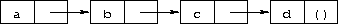
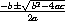
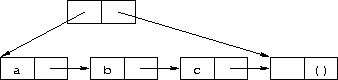

This chapter is an introduction to Scheme for programmers who are new to the language. You will get more from this chapter if you are sitting in front of an interactive Scheme system, trying out the examples as you go.
After reading this chapter and working the exercises, you should be able to start using Scheme. You will have learned the syntax of Scheme programs and how they are executed, along with how to use simple data structures and control mechanisms.
Most Scheme systems provide an interactive programming environment that simplifies program development and experimentation. The simplest interaction with Scheme follows a "read-evaluate-print" cycle. A program (often called a read-evaluate-print loop, or REPL) reads each expression you type at the keyboard, evaluates it, and prints its value.
With an interactive Scheme system, you can type an expression at the keyboard and see its value immediately. You can define a procedure and apply it to arguments to see how it works. You can even type in an entire program consisting of a set of procedure definitions and test it without leaving the system. When your program starts getting longer, it will be more convenient to type it into a file (using a text editor), load the file and test it interactively. In most Scheme systems, a file may be loaded with the nonstandard procedure load, which takes a string argument naming the file. Preparing your program in a file has several advantages: you have a chance to compose your program more carefully, you can correct errors without retyping the program, and you can retain a copy for later use. Most Scheme implementations treat expressions loaded from a file the same as expressions typed at the keyboard.
While Scheme provides various input and output procedures, the REPL takes care of reading expressions and printing their values. This frees you to concentrate on writing your program without worrying about how its results will be displayed.
The examples in this chapter and in the rest of the book follow a
regular format.
An expression you might type from your keyboard is given first,
possibly spanning several lines.
The value of the expression is given
after the  , to be read as "evaluates to."
The is omitted for definitions and when the value of
an expression is unspecified.
, to be read as "evaluates to."
The is omitted for definitions and when the value of
an expression is unspecified.
The example programs are formatted in a style that "looks nice" and conveys the structure of the program. The code is easy to read because the relationship between each expression and its subexpressions is clearly shown. Scheme ignores indentation and line breaks, however, so there is no need to follow a particular style. The important thing is to establish one style and keep to it. Scheme sees each program as if it were on a single line, with its subexpressions ordered from left to right.
If you have access to an interactive Scheme system, it might be a good idea to start it up now and type in the examples as you read. One of the simplest Scheme expressions is a string constant. Try typing "Hi Mom!" (including the double quotes) in response to the prompt. The system should respond with "Hi Mom!"; the value of any constant is the constant itself.
"Hi Mom!" "Hi Mom!"
Here is a set of expressions, each with Scheme's response. They are explained in later sections of this chapter, but for now use them to practice interacting with Scheme.
"hello" "hello"
42 42
22/7 22/7
3.141592653 3.141592653
+ #<procedure>
(+ 76 31) 107
(* -12 10) -120
'(a b c d) (a b c d)
Be careful not to miss any single quotes ( ' ), double quotes, or parentheses. If you left off a single quote in the last expression, you probably received a message indicating that an exception has occurred. Just try again. If you left off a closing parenthesis or double quote, the system might still be waiting for it.
Here are a few more expressions to try. You can try to figure out on your own what they mean or wait to find out later in the chapter.
(car '(a b c)) a
(cdr '(a b c)) (b c)
(cons 'a '(b c)) (a b c)
(cons (car '(a b c))
(cdr '(d e f))) (a e f)
As you can see, Scheme expressions may span more than one line. The Scheme system knows when it has an entire expression by matching double quotes and parentheses.
Next, let's try defining a procedure.
(define square
(lambda (n)
(* n n)))
The procedure square computes the square n2 of any number n. We say more about the expressions that make up this definition later in this chapter. For now it suffices to say that define establishes variable bindings, lambda creates procedures, and * names the multiplication procedure. Note the form of these expressions. All structured forms are enclosed in parentheses and written in prefix notation, i.e., the operator precedes the arguments. As you can see, this is true even for simple arithmetic operations such as *.
Try using square.
(square 5) 25
(square -200) 40000
(square 0.5) 0.25
(square -1/2) 1/4
Even though the next definition is short, you might enter it into a file. Let's assume you call the file "reciprocal.ss."
(define reciprocal
(lambda (n)
(if (= n 0)
"oops!"
(/ 1 n))))
This procedure, reciprocal, computes the quantity 1/n for any number n ≠ 0. For n = 0, reciprocal returns the string "oops!". Return to Scheme and try loading your file with the procedure load.
(load "reciprocal.ss")
Finally, try using the procedure we have just defined.
(reciprocal 10) 1/10
(reciprocal 1/10) 10
(reciprocal 0) "oops!"
(reciprocal (reciprocal 1/10)) 1/10
In the next section we will discuss Scheme expressions in more detail. Throughout this chapter, keep in mind that your Scheme system is one of the most useful tools for learning Scheme. Whenever you try one of the examples in the text, follow it up with your own examples. In an interactive Scheme system, the cost of trying something out is relatively small---usually just the time to type it in.
The simplest Scheme expressions are constant data objects, such as strings, numbers, symbols, and lists. Scheme supports other object types, but these four are enough for many programs. We saw some examples of strings and numbers in the preceding section.
Let's discuss numbers in a little more detail. Numbers are constants. If you enter a number, Scheme echoes it back to you. The following examples show that Scheme supports several types of numbers.
123456789987654321 123456789987654321
3/4 3/4
2.718281828 2.718281828
2.2+1.1i 2.2+1.1i
Scheme numbers include exact and inexact integer, rational, real, and complex numbers. Exact integers and rational numbers have arbitrary precision, i.e., they can be of arbitrary size. Inexact numbers are usually represented internally using IEEE standard floating-point representations.
Scheme provides the names +, -, *, and / for the corresponding arithmetic procedures. Each procedure accepts two numeric arguments. The expressions below are called procedure applications, because they specify the application of a procedure to a set of arguments.
(+ 1/2 1/2) 1
(- 1.5 1/2) 1.0
(* 3 1/2) 3/2
(/ 1.5 3/4) 2.0
Scheme employs prefix notation even for common arithmetic operations. Any procedure application, whether the procedure takes zero, one, two, or more arguments, is written as (procedure arg ...). This regularity simplifies the syntax of expressions; one notation is employed regardless of the operation, and there are no complicated rules regarding the precedence or associativity of operators.
Procedure applications may be nested, in which case the innermost values are computed first. We can thus nest applications of the arithmetic procedures given above to evaluate more complicated formulas.
(+ (+ 2 2) (+ 2 2)) 8
(- 2 (* 4 1/3)) 2/3
(* 2 (* 2 (* 2 (* 2 2)))) 32
(/ (* 6/7 7/2) (- 4.5 1.5)) 1.0
These examples demonstrate everything you need to use Scheme as a four-function desk calculator. While we will not discuss them in this chapter, Scheme supports many other arithmetic procedures. Now might be a good time to turn to Section 6.4 and experiment with some of them.
Simple numeric objects are sufficient for many tasks, but sometimes aggregate data structures containing two or more values are needed. In many languages, the basic aggregate data structure is the array. In Scheme, it is the list. Lists are written as sequences of objects surrounded by parentheses. For instance, (1 2 3 4 5) is a list of numbers, and ("this" "is" "a" "list") is a list of strings. Lists need not contain only one type of object, so (4.2 "hi") is a valid list containing a number and a string. Lists may be nested (may contain other lists), so ((1 2) (3 4)) is a valid list with two elements, each of which is a list of two elements.
You might notice that lists look just like procedure applications and wonder how Scheme tells them apart. That is, how does Scheme distinguish between a list of objects, (obj1 obj2 ...), and a procedure application, (procedure arg ...)?
In some cases, the distinction might seem obvious. The list of numbers (1 2 3 4 5) could hardly be confused with a procedure application, since 1 is a number, not a procedure. So, the answer might be that Scheme looks at the first element of the list or procedure application and makes its decision based on whether that first element is a procedure or not. This answer is not good enough, since we might even want to treat a valid procedure application such as (+ 3 4) as a list. The answer is that we must tell Scheme explicitly to treat a list as data rather than as a procedure application. We do this with quote.
(quote (1 2 3 4 5)) (1 2 3 4 5)
(quote ("this" "is" "a" "list")) ("this" "is" "a" "list")
(quote (+ 3 4)) (+ 3 4)
The quote forces the list to be treated as data. Try entering the above expressions without the quote; you will likely receive a message indicating that an exception has occurred for the first two and an incorrect answer (7) for the third.
Because quote is required fairly frequently in Scheme code, Scheme recognizes a single quotation mark ( ' ) preceding an expression as an abbreviation for quote.
'(1 2 3 4) (1 2 3 4)
'((1 2) (3 4)) ((1 2) (3 4))
'(/ (* 2 -1) 3) (/ (* 2 -1) 3)
Both forms are referred to as quote expressions. We often say an object is quoted when it is enclosed in a quote expression.
A quote expression is not a procedure application, since it inhibits the evaluation of its subexpression. It is an entirely different syntactic form. Scheme supports several other syntactic forms in addition to procedure applications and quote expressions. Each syntactic form is evaluated differently. Fortunately, the number of different syntactic forms is small. We will see more of them later in this chapter.
Not all quote expressions involve lists. Try the following expression with and without the quote wrapper.
(quote hello) hello
The symbol hello must be quoted in order to prevent Scheme from treating hello as a variable. Symbols and variables in Scheme are similar to symbols and variables in mathematical expressions and equations. When we evaluate the mathematical expression 1 - x for some value of x, we think of x as a variable. On the other hand, when we consider the algebraic equation x2 - 1 = (x - 1)(x + 1), we think of x as a symbol (in fact, we think of the whole equation symbolically). Just as quoting a list tells Scheme to treat a parenthesized form as a list rather than as a procedure application, quoting an identifier tells Scheme to treat the identifier as a symbol rather than as a variable. While symbols are commonly used to represent variables in symbolic representations of equations or programs, symbols may also be used, for example, as words in the representation of natural language sentences.
You might wonder why applications and variables share notations with lists and symbols. The shared notation allows Scheme programs to be represented as Scheme data, simplifying the writing of interpreters, compilers, editors, and other tools in Scheme. This is demonstrated by the Scheme interpreter given in Section 12.7, which is itself written in Scheme. Many people believe this to be one of the most important features of Scheme.
Numbers and strings may be quoted, too.
'2 2
'2/3 2/3
(quote "Hi Mom!") "Hi Mom!"
Numbers and strings are treated as constants in any case, however, so quoting them is unnecessary.
Now let's discuss some Scheme procedures for manipulating lists. There are two basic procedures for taking lists apart: car and cdr (pronounced could-er). car returns the first element of a list, and cdr returns the remainder of the list. (The names "car" and "cdr" are derived from operations supported by the first computer on which a Lisp language was implemented, the IBM 704.) Each requires a nonempty list as its argument.
(car '(a b c)) a
(cdr '(a b c)) (b c)
(cdr '(a)) ()
(car (cdr '(a b c))) b
(cdr (cdr '(a b c))) (c)
(car '((a b) (c d))) (a b)
(cdr '((a b) (c d))) ((c d))
The first element of a list is often called the "car" of the list, and the rest of the list is often called the "cdr" of the list. The cdr of a list with one element is (), the empty list.
The procedure cons constructs lists. It takes two arguments. The second argument is usually a list, and in that case cons returns a list.
(cons 'a '()) (a)
(cons 'a '(b c)) (a b c)
(cons 'a (cons 'b (cons 'c '()))) (a b c)
(cons '(a b) '(c d)) ((a b) c d)
(car (cons 'a '(b c))) a
(cdr (cons 'a '(b c))) (b c)
(cons (car '(a b c))
(cdr '(d e f))) (a e f)
(cons (car '(a b c))
(cdr '(a b c))) (a b c)
Just as "car" and "cdr" are often used as nouns, "cons" is often used as a verb. Creating a new list by adding an element to the beginning of a list is referred to as consing the element onto the list.
Notice the word "usually" in the description of cons's second argument. The procedure cons actually builds pairs, and there is no reason that the cdr of a pair must be a list. A list is a sequence of pairs; each pair's cdr is the next pair in the sequence.
">
The cdr of the last pair in a proper list is the empty list. Otherwise, the sequence of pairs forms an improper list. More formally, the empty list is a proper list, and any pair whose cdr is a proper list is a proper list.
An improper list is printed in dotted-pair notation, with a period, or dot, preceding the final element of the list.
(cons 'a 'b) (a . b)
(cdr '(a . b)) b
(cons 'a '(b . c)) (a b . c)
Because of its printed notation, a pair whose cdr is not a list is often called a dotted pair. Even pairs whose cdrs are lists can be written in dotted-pair notation, however, although the printer always chooses to write proper lists without dots.
'(a . (b . (c . ()))) (a b c)
The procedure list is similar to cons, except that it takes an arbitrary number of arguments and always builds a proper list.
(list 'a 'b 'c) (a b c)
(list 'a) (a)
(list) ()
Section 6.3 provides more information on lists and the Scheme procedures for manipulating them. This might be a good time to turn to that section and familiarize yourself with the other procedures given there.
| a. | 1.2 × (2 - 1/3) + -8.7 |
| b. | (2/3 + 4/9) ÷ (5/11 - 4/3) |
| c. | 1 + 1 ÷ (2 + 1 ÷ (1 + 1/2)) |
| d. | 1 × -2 × 3 × -4 × 5 × -6 × 7 |
| a. | (cons 'car 'cdr) |
| b. | (list 'this '(is silly)) |
| c. | (cons 'is '(this silly?)) |
| d. | (quote (+ 2 3)) |
| e. | (cons '+ '(2 3)) |
| f. | (car '(+ 2 3)) |
| g. | (cdr '(+ 2 3)) |
| h. | cons |
| i. | (quote cons) |
| j. | (quote (quote cons)) |
| k. | (car (quote (quote cons))) |
| l. | (+ 2 3) |
| m. | (+ '2 '3) |
| n. | (+ (car '(2 3)) (car (cdr '(2 3)))) |
| o. | ((car (list + - * /)) 2 3) |

(cons 1 (cons '(2 . ((3) . ())) (cons '(()) (cons 4 5))))
Let's turn to a discussion of how Scheme evaluates the expressions you type. We have already established the rules for constant objects such as strings and numbers: the object itself is the value. You have probably also worked out in your mind a rule for evaluating procedure applications of the form (procedure arg1 ... argn). Here, procedure is an expression representing a Scheme procedure, and arg1 ... argn are expressions representing its arguments. One possibility is the following.

For example, consider the simple procedure application (+ 3 4). The value of + is the addition procedure, the value of 3 is the number 3, and the value of 4 is the number 4. Applying the addition procedure to 3 and 4 yields 7, so our value is the object 7.
By applying this process at each level, we can find the value of the nested expression (* (+ 3 4) 2). The value of * is the multiplication procedure, the value of (+ 3 4) we can determine to be the number 7, and the value of 2 is the number 2. Multiplying 7 by 2 we get 14, so our answer is 14.
This rule works for procedure applications but not for quote expressions because the subexpressions of a procedure application are evaluated, whereas the subexpression of a quote expression is not. The evaluation of a quote expression is more similar to the evaluation of constant objects. The value of a quote expression of the form (quote object) is simply object.
Constant objects, procedure applications, and quote expressions are only three of the many syntactic forms provided by Scheme. Fortunately, only a few of the other syntactic forms need to be understood directly by a Scheme programmer; these are referred to as core syntactic forms. The remaining syntactic forms are syntactic extensions defined, ultimately, in terms of the core syntactic forms. We will discuss the remaining core syntactic forms and a few syntactic extensions in the remaining sections of this chapter. Section 3.1 summarizes the core syntactic forms and introduces the syntactic extension mechanism.
Before we go on to more syntactic forms and procedures, two points related to the evaluation of procedure applications are worthy of note. First, the process given above is overspecified, in that it requires the subexpressions to be evaluated from left to right. That is, procedure is evaluated before arg1, arg1 is evaluated before arg2, and so on. This need not be the case. A Scheme evaluator is free to evaluate the expressions in any order---left to right, right to left, or any other sequential order. In fact, the subexpressions may be evaluated in different orders for different applications, even in the same implementation.
The second point is that procedure is evaluated in the same way as arg1 ... argn. While procedure is often a variable that names a particular procedure, this need not be the case. Exercise 2.2.3 had you determine the value of the expression ((car (list + - * /)) 2 3). Here, procedure is (car (list + - * /)). The value of (car (list + - * /)) is the addition procedure, just as if procedure were simply the variable +.
((car (cdr (list + - * /))) 17 5)
Suppose expr is a Scheme expression that contains a variable var. Suppose, additionally, that we would like var to have the value val when we evaluate expr. For example, we might like x to have the value 2 when we evaluate (+ x 3). Or, we might want y to have the value 3 when we evaluate (+ 2 y). The following examples demonstrate how to do this using Scheme's let syntactic form.
(let ((x 2))
(+ x 3)) 5
(let ((y 3))
(+ 2 y)) 5
(let ((x 2) (y 3))
(+ x y)) 5
The let syntactic form includes a list of variable-expression pairs, along with a sequence of expressions referred to as the body of the let. The general form of a let expression is
(let ((var expr) ...) body1 body2 ...)
We say the variables are bound to the values by the let. We refer to variables bound by let as let-bound variables.
A let expression is often used to simplify an expression that would contain two identical subexpressions. Doing so also ensures that the value of the common subexpression is computed only once.
(+ (* 4 4) (* 4 4)) 32
(let ((a (* 4 4))) (+ a a)) 32
Brackets are often used in place of parentheses to delimit the bindings of a let expression.
(let ([list1 '(a b c)] [list2 '(d e f)])
(cons (cons (car list1)
(car list2))
(cons (car (cdr list1))
(car (cdr list2))))) ((a . d) b . e)
Scheme treats forms enclosed in brackets just like forms enclosed in parentheses. An open bracket must be matched by a close bracket, and an open parenthesis must be matched by a close parenthesis. We use brackets for let (and, as we'll see, several other standard syntactic forms) to improve readability, especially when we might otherwise have two or more consecutive open parentheses.
Since expressions in the first position of a procedure application are evaluated no differently from other expressions, a let-bound variable may be used there as well.
(let ([f +])
(f 2 3)) 5
(let ([f +] [x 2])
(f x 3)) 5
(let ([f +] [x 2] [y 3])
(f x y)) 5
The variables bound by let are visible only within the body of the let.
(let ([+ *])
(+ 2 3)) 6
(+ 2 3) 5
This is fortunate, because we would not want the value of + to be the multiplication procedure everywhere.
It is possible to nest let expressions.
(let ([a 4] [b -3])
(let ([a-squared (* a a)]
[b-squared (* b b)])
(+ a-squared b-squared))) 25
When nested let expressions bind the same variable, only the binding created by the inner let is visible within its body.
(let ([x 1])
(let ([x (+ x 1)])
(+ x x))) 4
The outer let expression binds x to 1 within its body, which is the second let expression. The inner let expression binds x to (+ x 1) within its body, which is the expression (+ x x). What is the value of (+ x 1)? Since (+ x 1) appears within the body of the outer let but not within the body of the inner let, the value of x must be 1 and hence the value of (+ x 1) is 2. What about (+ x x)? It appears within the body of both let expressions. Only the inner binding for x is visible, so x is 2 and (+ x x) is 4.
The inner binding for x is said to shadow the outer binding. A let-bound variable is visible everywhere within the body of its let expression except where it is shadowed. The region where a variable binding is visible is called its scope. The scope of the first x in the example above is the body of the outer let expression minus the body of the inner let expression, where it is shadowed by the second x. This form of scoping is referred to as lexical scoping, since the scope of each binding can be determined by a straightforward textual analysis of the program.
Shadowing may be avoided by choosing different names for variables. The expression above could be rewritten so that the variable bound by the inner let is new-x.
(let ([x 1])
(let ([new-x (+ x 1)])
(+ new-x new-x))) 4
Although choosing different names can sometimes prevent confusion, shadowing can help prevent the accidental use of an "old" value. For example, with the original version of the preceding example, it would be impossible for us to mistakenly refer to the outer x within the body of the inner let.
| a. | (+ (- (* 3 a) b) (+ (* 3 a) b)) |
| b. | (cons (car (list a b c)) (cdr (list a b c))) |
(let ([x 9])
(* x
(let ([x (/ x 3)])
(+ x x))))
| a. |
(let ([x 'a] [y 'b]) |
| b. |
(let ([x '((a b) c)]) |
In the expression (let ([x (* 3 4)]) (+ x x)), the variable x is bound to the value of (* 3 4). What if we would like the value of (+ x x) where x is bound to the value of (/ 99 11)? Where x is bound to the value of (- 2 7)? In each case we need a different let expression. When the body of the let is complicated, however, having to repeat it can be inconvenient.
Instead, we can use the syntactic form lambda to create a new procedure that has x as a parameter and has the same body as the let expression.
(lambda (x) (+ x x)) #<procedure>
The general form of a lambda expression is
(lambda (var ...) body1 body2 ...)
The variables var ... are the formal parameters of the procedure, and the sequence of expressions body1 body2 ... is its body. (Actually, the true general form is somewhat more general than this, as you will see later.)
A procedure is just as much an object as a number, string, symbol, or pair. It does not have any meaningful printed representation as far as Scheme is concerned, however, so this book uses the notation #<procedure> to show that the value of an expression is a procedure.
The most common operation to perform on a procedure is to apply it to one or more values.
((lambda (x) (+ x x)) (* 3 4)) 24
This is no different from any other procedure application. The procedure is the value of (lambda (x) (+ x x)), and the only argument is the value of (* 3 4), or 12. The argument values, or actual parameters, are bound to the formal parameters within the body of the lambda expression in the same way as let-bound variables are bound to their values. In this case, x is bound to 12, and the value of (+ x x) is 24. Thus, the result of applying the procedure to the value 12 is 24.
Because procedures are objects, we can establish a procedure as the value of a variable and use the procedure more than once.
(let ([double (lambda (x) (+ x x))])
(list (double (* 3 4))
(double (/ 99 11))
(double (- 2 7)))) (24 18 -10)
Here, we establish a binding for double to a procedure, then use this procedure to double three different values.
The procedure expects its actual parameter to be a number, since it passes the actual parameter on to +. In general, the actual parameter may be any sort of object. Consider, for example, a similar procedure that uses cons instead of +.
(let ([double-cons (lambda (x) (cons x x))])
(double-cons 'a)) (a . a)
Noting the similarity between double and double-cons, you should not be surprised to learn that they may be collapsed into a single procedure by adding an additional argument.
(let ([double-any (lambda (f x) (f x x))])
(list (double-any + 13)
(double-any cons 'a))) (26 (a . a))
This demonstrates that procedures may accept more than one argument and that arguments passed to a procedure may themselves be procedures.
As with let expressions, lambda expressions become somewhat more interesting when they are nested within other lambda or let expressions.
(let ([x 'a])
(let ([f (lambda (y) (list x y))])
(f 'b))) (a b)
The occurrence of x within the lambda expression refers to the x outside the lambda that is bound by the outer let expression. The variable x is said to occur free in the lambda expression or to be a free variable of the lambda expression. The variable y does not occur free in the lambda expression since it is bound by the lambda expression. A variable that occurs free in a lambda expression should be bound, e.g., by an enclosing lambda or let expression, unless the variable is (like the names of primitive procedures) bound outside of the expression, as we discuss in the following section.
What happens when the procedure is applied somewhere outside the scope of the bindings for variables that occur free within the procedure, as in the following expression?
(let ([f (let ([x 'sam])
(lambda (y z) (list x y z)))])
(f 'i 'am)) (sam i am)
The answer is that the same bindings that were in effect when the procedure was created are in effect again when the procedure is applied. This is true even if another binding for x is visible where the procedure is applied.
(let ([f (let ([x 'sam])
(lambda (y z) (list x y z)))])
(let ([x 'not-sam])
(f 'i 'am))) (sam i am)
In both cases, the value of x within the procedure named f is sam.
Incidentally, a let expression is nothing more than the direct application of a lambda expression to a set of argument expressions. For example, the two expressions below are equivalent.
(let ([x 'a]) (cons x x)) ≡ ((lambda (x) (cons x x)) 'a)
In fact, a let expression is a syntactic extension defined in terms of lambda and procedure application, which are both core syntactic forms. In general, any expression of the form
(let ((var expr) ...) body1 body2 ...)
is equivalent to the following.
((lambda (var ...) body1 body2 ...)
expr ...)
See Section 3.1 for more about core forms and syntactic extensions.
As mentioned above, the general form of lambda is a bit more complicated than the form we saw earlier, in that the formal parameter specification, (var ...), need not be a proper list, or indeed even a list at all. The formal parameter specification can be in any of the following three forms:
In the first case, exactly n actual parameters must be supplied, and each variable is bound to the corresponding actual parameter. In the second, any number of actual parameters is valid; all of the actual parameters are put into a single list and the single variable is bound to this list. The third case is a hybrid of the first two cases. At least n actual parameters must be supplied. The variables var1 ... varn are bound to the corresponding actual parameters, and the variable varr is bound to a list containing the remaining actual parameters. In the second and third cases, varr is sometimes referred to as a "rest" parameter because it holds the rest of the actual parameters beyond those that are individually named.
Let's consider a few examples to help clarify the more general syntax of lambda expressions.
(let ([f (lambda x x)])
(f 1 2 3 4)) (1 2 3 4)
(let ([f (lambda x x)])
(f)) ()
(let ([g (lambda (x . y) (list x y))])
(g 1 2 3 4)) (1 (2 3 4))
(let ([h (lambda (x y . z) (list x y z))])
(h 'a 'b 'c 'd)) (a b (c d))
In the first two examples, the procedure named f accepts any number of arguments. These arguments are automatically formed into a list to which the variable x is bound; the value of f is this list. In the first example, the arguments are 1, 2, 3, and 4, so the answer is (1 2 3 4). In the second, there are no arguments, so the answer is the empty list (). The value of the procedure named g in the third example is a list whose first element is the first argument and whose second element is a list containing the remaining arguments. The procedure named h is similar but separates out the second argument. While f accepts any number of arguments, g must receive at least one and h must receive at least two.
| a. |
(let ([f (lambda (x) x)]) |
| b. |
(let ([f (lambda x x)]) |
| c. |
(let ([f (lambda (x . y) x)]) |
| d. |
(let ([f (lambda (x . y) y)]) |
| a. | (lambda (f x) (f x)) |
| b. | (lambda (x) (+ x x)) |
| c. | (lambda (x y) (f x y)) |
| d. |
(lambda (x) |
| e. |
(lambda (x) |
| f. |
(lambda (x) |
The variables bound by let and lambda expressions are not visible outside the bodies of these expressions. Suppose you have created an object, perhaps a procedure, that must be accessible anywhere, like + or cons. What you need is a top-level definition, which may be established with define. Top-level definitions, which are supported by most interactive Scheme systems, are visible in every expression you enter, except where shadowed by another binding.
Let's establish a top-level definition of the double-any procedure of the last section.
(define double-any
(lambda (f x)
(f x x)))
The variable double-any now has the same status as cons or the name of any other primitive procedure. We can use double-any as if it were a primitive procedure.
(double-any + 10) 20
(double-any cons 'a) (a . a)
A top-level definition may be established for any object, not just for procedures.
(define sandwich "peanut-butter-and-jelly")
sandwich "peanut-butter-and-jelly"
Most often, though, top-level definitions are used for procedures.
As suggested above, top-level definitions may be shadowed by let or lambda bindings.
(define xyz '(x y z))
(let ([xyz '(z y x)])
xyz) (z y x)
Variables with top-level definitions act almost as if they were bound by a let expression enclosing all of the expressions you type.
Given only the simple tools you have read about up to this point, it is already possible to define some of the primitive procedures provided by Scheme and described later in this book. If you completed the exercises from the last section, you should already know how to define list.
(define list (lambda x x))
Also, Scheme provides the abbreviations cadr and cddr for the compositions of car with cdr and cdr with cdr. That is, (cadr list) is equivalent to (car (cdr list)), and, similarly, (cddr list) is equivalent to (cdr (cdr list)). They are easily defined as follows.
(define cadr
(lambda (x)
(car (cdr x))))
(define cddr
(lambda (x)
(cdr (cdr x))))
(cadr '(a b c)) b
(cddr '(a b c)) (c)
Any definition (define var expr) where expr is a lambda expression can be written in a shorter form that suppresses the lambda. The exact syntax depends upon the format of the lambda expression's formal parameter specifier, i.e., whether it is a proper list of variables, a single variable, or an improper list of variables. A definition of the form
(define var0
(lambda (var1 ... varn)
e1 e2 ...))
may be abbreviated
(define (var0 var1 ... varn)
e1 e2 ...)
while
(define var0
(lambda varr
e1 e2 ...))
may be abbreviated
(define (var0 . varr)
e1 e2 ...)
and
(define var0
(lambda (var1 ... varn . varr)
e1 e2 ...))
may be abbreviated
(define (var0 var1 ... varn . varr)
e1 e2 ...)
For example, the definitions of cadr and list might be written as follows.
(define (cadr x)
(car (cdr x)))
(define (list . x) x)
This book does not often employ this alternative syntax. Although it is shorter, it tends to mask the reality that procedures are not intimately tied to variables, or names, as they are in many other languages. This syntax is often referred to, somewhat pejoratively, as the "defun" syntax for define, after the defun form provided by Lisp languages in which procedures are more closely tied to their names.
Top-level definitions make it easier for us to experiment with a procedure interactively because we need not retype the procedure each time it is used. Let's try defining a somewhat more complicated variation of double-any, one that turns an "ordinary" two-argument procedure into a "doubling" one-argument procedure.
(define doubler
(lambda (f)
(lambda (x) (f x x))))
doubler accepts one argument, f, which must be a procedure that accepts two arguments. The procedure returned by doubler accepts one argument, which it uses for both arguments in an application of f. We can define, with doubler, the simple double and double-cons procedures of the last section.
(define double (doubler +))
(double 13/2) 13
(define double-cons (doubler cons))
(double-cons 'a) (a . a)
We can also define double-any with doubler.
(define double-any
(lambda (f x)
((doubler f) x)))
Within double and double-cons, f has the appropriate value, i.e., + or cons, even though the procedures are clearly applied outside the scope of f.
What happens if you attempt to use a variable that is not bound by a let or lambda expression and that does not have a top-level definition? Try using the variable i-am-not-defined to see what happens.
(i-am-not-defined 3)
Most Scheme systems print a message indicating that an unbound- or undefined-variable exception has occurred.
The system should not, however, complain about the appearance of an undefined variable within a lambda expression, until and unless the resulting procedure is applied. The following should not cause an exception, even though we have not yet established a top-level definition of proc2.
(define proc1
(lambda (x y)
(proc2 y x)))
If you try to apply proc1 before defining proc2, you should get a undefined exception message. Let's give proc2 a top-level definition and try proc1.
(define proc2 cons)
(proc1 'a 'b) (b . a)
When you define proc1, the system accepts your promise to define proc2, and does not complain unless you use proc1 before defining proc2. This allows you to define procedures in any order you please. This is especially useful when you are trying to organize a file full of procedure definitions in a way that makes your program more readable. It is necessary when two procedures defined at top level depend upon each other; we will see some examples of this later.
(double-any double-any double-any)
given the definition of double-any from the beginning of this section?
So far we have considered expressions that perform a given task unconditionally. Suppose that we wish to write the procedure abs. If its argument x is negative, abs returns -x; otherwise, it returns x. The most straightforward way to write abs is to determine whether the argument is negative and if so negate it, using the if syntactic form.
(define abs
(lambda (n)
(if (< n 0)
(- 0 n)
n)))
(abs 77) 77
(abs -77) 77
An if expression has the form (if test consequent alternative), where consequent is the expression to evaluate if test is true and alternative is the expression to evaluate if test is false. In the expression above, test is (< n 0), consequent is (- 0 n), and alternative is n.
The procedure abs could be written in a variety of other ways. Any of the following are valid definitions of abs.
(define abs
(lambda (n)
(if (>= n 0)
n
(- 0 n))))
(define abs
(lambda (n)
(if (not (< n 0))
n
(- 0 n))))
(define abs
(lambda (n)
(if (or (> n 0) (= n 0))
n
(- 0 n))))
(define abs
(lambda (n)
(if (= n 0)
0
(if (< n 0)
(- 0 n)
n))))
(define abs
(lambda (n)
((if (>= n 0) + -)
0
n)))
The first of these definitions asks if n is greater than or equal to zero, inverting the test. The second asks if n is not less than zero, using the procedure not with <. The third asks if n is greater than zero or n is equal to zero, using the syntactic form or. The fourth treats zero separately, though there is no benefit in doing so. The fifth is somewhat tricky; n is either added to or subtracted from zero, depending upon whether n is greater than or equal to zero.
Why is if a syntactic form and not a procedure? In order to answer this, let's revisit the definition of reciprocal from the first section of this chapter.
(define reciprocal
(lambda (n)
(if (= n 0)
"oops!"
(/ 1 n))))
The second argument to the division procedure should not be zero, since the result is mathematically undefined. Our definition of reciprocal avoids this problem by testing for zero before dividing. Were if a procedure, its arguments (including (/ 1 n)) would be evaluated before it had a chance to choose between the consequent and alternative. Like quote, which does not evaluate its only subexpression, if does not evaluate all of its subexpressions and so cannot be a procedure.
The syntactic form or operates in a manner similar to if. The general form of an or expression is (or expr ...). If there are no subexpressions, i.e., the expression is simply (or), the value is false. Otherwise, each expr is evaluated in turn until either (a) one of the expressions evaluates to true or (b) no more expressions are left. In case (a), the value is true; in case (b), the value is false.
To be more precise, in case (a), the value of the or expression is the value of the last subexpression evaluated. This clarification is necessary because there are many possible true values. Usually, the value of a test expression is one of the two objects #t, for true, or #f, for false.
(< -1 0) #t
(> -1 0) #f
Every Scheme object, however, is considered to be either true or false by conditional expressions and by the procedure not. Only #f is considered false; all other objects are considered true.
(if #t 'true 'false) true
(if #f 'true 'false) false
(if '() 'true 'false) true
(if 1 'true 'false) true
(if '(a b c) 'true 'false) true
(not #t) #f
(not "false") #f
(not #f) #t
(or) #f
(or #f) #f
(or #f #t) #t
(or #f 'a #f) a
The and syntactic form is similar in form to or, but an and expression is true if all its subexpressions are true, and false otherwise. In the case where there are no subexpressions, i.e., the expression is simply (and), the value is true. Otherwise, the subexpressions are evaluated in turn until either no more subexpressions are left or the value of a subexpression is false. The value of the and expression is the value of the last subexpression evaluated.
Using and, we can define a slightly different version of reciprocal.
(define reciprocal
(lambda (n)
(and (not (= n 0))
(/ 1 n))))
(reciprocal 3) 1/3
(reciprocal 0.5) 2.0
(reciprocal 0) #f
In this version, the value is #f if n is zero and 1/n otherwise.
The procedures =, <, >, <=, and >= are called predicates. A predicate is a procedure that answers a specific question about its arguments and returns one of the two values #t or #f. The names of most predicates end with a question mark ( ? ); the common numeric procedures listed above are exceptions to this rule. Not all predicates require numeric arguments, of course. The predicate null? returns true if its argument is the empty list () and false otherwise.
(null? '()) #t
(null? 'abc) #f
(null? '(x y z)) #f
(null? (cdddr '(x y z))) #t
The procedure cdr must not be passed anything other than a pair, and an exception is raised when this happens. Common Lisp, however, defines (cdr '()) to be (). The following procedure, lisp-cdr, is defined using null? to return () if its argument is ().
(define lisp-cdr
(lambda (x)
(if (null? x)
'()
(cdr x))))
(lisp-cdr '(a b c)) (b c)
(lisp-cdr '(c)) ()
(lisp-cdr '()) ()
Another useful predicate is eqv?, which requires two arguments. If the two arguments are equivalent, eqv? returns true. Otherwise, eqv? returns false.
(eqv? 'a 'a) #t
(eqv? 'a 'b) #f
(eqv? #f #f) #t
(eqv? #t #t) #t
(eqv? #f #t) #f
(eqv? 3 3) #t
(eqv? 3 2) #f
(let ([x "Hi Mom!"])
(eqv? x x)) #t
(let ([x (cons 'a 'b)])
(eqv? x x)) #t
(eqv? (cons 'a 'b) (cons 'a 'b)) #f
As you can see, eqv? returns true if the arguments are the same symbol, boolean, number, pair, or string. Two pairs are not the same by eqv? if they are created by different calls to cons, even if they have the same contents. Detailed equivalence rules for eqv? are given in Section 6.2.
Scheme also provides a set of type predicates that return true or false depending on the type of the object, e.g., pair?, symbol?, number?, and string?. The predicate pair?, for example, returns true only if its argument is a pair.
(pair? '(a . c)) #t
(pair? '(a b c)) #t
(pair? '()) #f
(pair? 'abc) #f
(pair? "Hi Mom!") #f
(pair? 1234567890) #f
Type predicates are useful for deciding if the argument passed to a procedure is of the appropriate type. For example, the following version of reciprocal checks first to see that its argument is a number before testing against zero or performing the division.
(define reciprocal
(lambda (n)
(if (and (number? n) (not (= n 0)))
(/ 1 n)
"oops!")))
(reciprocal 2/3) 3/2
(reciprocal 'a) "oops!"
By the way, the code that uses reciprocal must check to see that the returned value is a number and not a string. To relieve the caller of this obligation, it is usually preferable to report the error, using assertion-violation, as follows.
(define reciprocal
(lambda (n)
(if (and (number? n) (not (= n 0)))
(/ 1 n)
(assertion-violation 'reciprocal
"improper argument"
n))))
(reciprocal .25) 4.0
(reciprocal 0) exception in reciprocal: improper argument 0
(reciprocal 'a) exception in reciprocal: improper argument a
The first argument to assertion-violation is a symbol identifying where the message originates, the second is a string describing the error, and the third and subsequent arguments are "irritants" to be included with the error message.
Let's look at one more conditional expression, cond, that is often useful in place of if. cond is similar to if except that it allows multiple test and alternative expressions. Consider the following definition of sign, which returns -1 for negative inputs, +1 for positive inputs, and 0 for zero.
(define sign
(lambda (n)
(if (< n 0)
-1
(if (> n 0)
+1
0))))
(sign -88.3) -1
(sign 0) 0
(sign 333333333333) 1
(* (sign -88.3) (abs -88.3)) -88.3
The two if expressions may be replaced by a single cond expression as follows.
(define sign
(lambda (n)
(cond
[(< n 0) -1]
[(> n 0) +1]
[else 0])))
A cond expression usually takes the form
(cond (test expr) ... (else expr))
though the else clause may be omitted. This should be done only when there is no possibility that all the tests will fail, as in the new version of sign below.
(define sign
(lambda (n)
(cond
[(< n 0) -1]
[(> n 0) +1]
[(= n 0) 0])))
These definitions of sign do not depend on the order in which the tests are performed, since only one of the tests can be true for any value of n. The following procedure computes the tax on a given amount of income in a progressive tax system with breakpoints at 10,000, 20,000, and 30,000 dollars.
(define income-tax
(lambda (income)
(cond
[(<= income 10000) (* income .05)]
[(<= income 20000) (+ (* (- income 10000) .08) 500.00)]
[(<= income 30000) (+ (* (- income 20000) .13) 1300.00)]
[else (+ (* (- income 30000) .21) 2600.00)])))
(income-tax 5000) 250.0
(income-tax 15000) 900.0
(income-tax 25000) 1950.0
(income-tax 50000) 6800.0
In this example, the order in which the tests are performed, left to right (top to bottom), is significant.
(shorter '(a b) '(c d e)) (a b)
(shorter '(a b) '(c d)) (a b)
(shorter '(a b) '(c)) (c)
We have seen how we can control whether or not expressions are evaluated with if, and, or, and cond. We can also perform an expression more than once by creating a procedure containing the expression and invoking the procedure more than once. What if we need to perform some expression repeatedly, say for all the elements of a list or all the numbers from one to ten? We can do so via recursion. Recursion is a simple concept: the application of a procedure from within that procedure. It can be tricky to master recursion at first, but once mastered it provides expressive power far beyond ordinary looping constructs.
A recursive procedure is a procedure that applies itself. Perhaps the simplest recursive procedure is the following, which we will call goodbye.
(define goodbye
(lambda ()
(goodbye)))
(goodbye)
This procedure takes no arguments and simply applies itself immediately.
There is no value after the because goodbye never returns.
Obviously, to make practical use out of a recursive procedure, we must have some way to terminate the recursion. Most recursive procedures should have at least two basic elements, a base case and a recursion step. The base case terminates the recursion, giving the value of the procedure for some base argument. The recursion step gives the value in terms of the value of the procedure applied to a different argument. In order for the recursion to terminate, the different argument must be closer to the base argument in some way.
Let's consider the problem of finding the length of a proper list recursively. We need a base case and a recursion step. The logical base argument for recursion on lists is nearly always the empty list. The length of the empty list is zero, so the base case should give the value zero for the empty list. In order to become closer to the empty list, the natural recursion step involves the cdr of the argument. A nonempty list is one element longer than its cdr, so the recursion step gives the value as one more than the length of the cdr of the list.
(define length
(lambda (ls)
(if (null? ls)
0
(+ (length (cdr ls)) 1))))
(length '()) 0
(length '(a)) 1
(length '(a b)) 2
The if expression asks if the list is empty. If so, the value is zero. This is the base case. If not, the value is one more than the length of the cdr of the list. This is the recursion step.
Many Scheme implementations allow you to trace the execution of a procedure to see how it operates. In Chez Scheme, for example, one way to trace a procedure is to type (trace name), where name is the name of a procedure you have defined at top level. If you trace length as defined above and pass it the argument '(a b c d), you should see something like this:
|(length (a b c d))
| (length (b c d))
| |(length (c d))
| | (length (d))
| | |(length ())
| | |0
| | 1
| |2
| 3
|4
The indentation shows the nesting level of the recursion; the vertical lines associate applications visually with their values. Notice that on each application of length the list gets smaller until it finally reaches (). The value at () is 0, and each outer level adds 1 to arrive at the final value.
Let's write a procedure, list-copy, that returns a copy of its argument, which must be a list. That is, list-copy returns a new list consisting of the elements (but not the pairs) of the old list. Making a copy might be useful if either the original list or the copy might be altered via set-car! or set-cdr!, which we discuss later.
(list-copy '()) ()
(list-copy '(a b c)) (a b c)
See if you can define list-copy before studying the definition below.
(define list-copy
(lambda (ls)
(if (null? ls)
'()
(cons (car ls)
(list-copy (cdr ls))))))
The definition of list-copy is similar to the definition of length. The test in the base case is the same, (null? ls). The value in the base case is (), however, not 0, because we are building up a list, not a number. The recursive call is the same, but instead of adding one, list-copy conses the car of the list onto the value of the recursive call.
There is no reason why there cannot be more than one base case. The procedure memv takes two arguments, an object and a list. It returns the first sublist, or tail, of the list whose car is equal to the object, or #f if the object is not found in the list. The value of memv may be used as a list or as a truth value in a conditional expression.
(define memv
(lambda (x ls)
(cond
[(null? ls) #f]
[(eqv? (car ls) x) ls]
[else (memv x (cdr ls))])))
(memv 'a '(a b b d)) (a b b d)
(memv 'b '(a b b d)) (b b d)
(memv 'c '(a b b d)) #f
(memv 'd '(a b b d)) (d)
(if (memv 'b '(a b b d))
"yes"
"no") "yes"
Here there are two conditions to check, hence the use of cond. The first cond clause checks for the base value of (); no object is a member of (), so the answer is #f. The second clause asks if the car of the list is the object, in which case the list is returned, being the first tail whose car contains the object. The recursion step just continues down the list.
There may also be more than one recursion case. Like memv, the procedure remv defined below takes two arguments, an object and a list. It returns a new list with all occurrences of the object removed from the list.
(define remv
(lambda (x ls)
(cond
[(null? ls) '()]
[(eqv? (car ls) x) (remv x (cdr ls))]
[else (cons (car ls) (remv x (cdr ls)))])))
(remv 'a '(a b b d)) (b b d)
(remv 'b '(a b b d)) (a d)
(remv 'c '(a b b d)) (a b b d)
(remv 'd '(a b b d)) (a b b)
This definition is similar to the definition of memv above, except remv does not quit once it finds the element in the car of the list. Rather, it continues, simply ignoring the element. If the element is not found in the car of the list, remv does the same thing as list-copy above: it conses the car of the list onto the recursive value.
Up to now, the recursion has been only on the cdr of a list. It is sometimes useful, however, for a procedure to recur on the car as well as the cdr of the list. The procedure tree-copy defined below treats the structure of pairs as a tree rather than as a list, with the left subtree being the car of the pair and the right subtree being the cdr of the pair. It performs a similar operation to list-copy, building new pairs while leaving the elements (leaves) alone.
(define tree-copy
(lambda (tr)
(if (not (pair? tr))
tr
(cons (tree-copy (car tr))
(tree-copy (cdr tr))))))
(tree-copy '((a . b) . c)) ((a . b) . c)
The natural base argument for a tree structure is anything that is not a pair, since the recursion traverses pairs rather than lists. The recursive step in this case is doubly recursive, finding the value recursively for the car as well as the cdr of the argument.
At this point, readers who are familiar with other languages that provide special iteration constructs, e.g., while or for loops, might wonder whether similar constructs are required in Scheme. Such constructs are unnecessary; iteration in Scheme is expressed more clearly and succinctly via recursion. Recursion is more general and eliminates the need for the variable assignments required by many other languages' iteration constructs, resulting in code that is more reliable and easier to follow. Some recursion is essentially iteration and executes as such; Section 3.2 has more to say about this. Often, there is no need to make a distinction, however. Concentrate instead on writing clear, concise, and correct programs.
Before we leave the topic of recursion, let's consider a special form of repetition called mapping. Consider the following procedure, abs-all, that takes a list of numbers as input and returns a list of their absolute values.
(define abs-all
(lambda (ls)
(if (null? ls)
'()
(cons (abs (car ls))
(abs-all (cdr ls))))))
(abs-all '(1 -2 3 -4 5 -6)) (1 2 3 4 5 6)
This procedure forms a new list from the input list by applying the procedure abs to each element. We say that abs-all maps abs over the input list to produce the output list. Mapping a procedure over a list is a fairly common thing to do, so Scheme provides the procedure map, which maps its first argument, a procedure, over its second, a list. We can use map to define abs-all.
(define abs-all
(lambda (ls)
(map abs ls)))
We really do not need abs-all, however, since the corresponding direct application of map is just as short and perhaps clearer.
(map abs '(1 -2 3 -4 5 -6)) (1 2 3 4 5 6)
Of course, we can use lambda to create the procedure argument to map, e.g., to square the elements of a list of numbers.
(map (lambda (x) (* x x))
'(1 -3 -5 7)) (1 9 25 49)
We can map a multiple-argument procedure over multiple lists, as in the following example.
(map cons '(a b c) '(1 2 3)) ((a . 1) (b . 2) (c . 3))
The lists must be of the same length, and the procedure should accept as many arguments as there are lists. Each element of the output list is the result of applying the procedure to corresponding members of the input list.
Looking at the first definition of abs-all above, you should be able to derive, before studying it, the following definition of map1, a restricted version of map that maps a one-argument procedure over a single list.
(define map1
(lambda (p ls)
(if (null? ls)
'()
(cons (p (car ls))
(map1 p (cdr ls))))))
(map1 abs '(1 -2 3 -4 5 -6)) (1 2 3 4 5 6)
All we have done is to replace the call to abs in abs-all with a call to the new parameter p. A definition of the more general map is given in Section 5.4.
(make-list 7 '()) (() () () () () () ())
[Hint: The base test should be (= n 0), and the recursion step should involve (- n 1). Whereas () is the natural base case for recursion on lists, 0 is the natural base case for recursion on nonnegative integers. Similarly, subtracting 1 is the natural way to bring a nonnegative integer closer to 0.]
(list-ref '(1 2 3 4) 0) 1
(list-tail '(1 2 3 4) 0) (1 2 3 4)
(list-ref '(a short (nested) list) 2) (nested)
(list-tail '(a short (nested) list) 2) ((nested) list)
Define both procedures.
(even? 17) #f
(odd? 17) #t
(transpose '((a . 1) (b . 2) (c . 3))) ((a b c) 1 2 3)
[Hint: ((a b c) 1 2 3) is the same as ((a b c) . (1 2 3)).]
Although many programs can be written without them, assignments to top-level variables or let-bound and lambda-bound variables are sometimes useful. Assignments do not create new bindings, as with let or lambda, but rather change the values of existing bindings. Assignments are performed with set!.
(define abcde '(a b c d e))
abcde (a b c d e)
(set! abcde (cdr abcde))
abcde (b c d e)
(let ([abcde '(a b c d e)])
(set! abcde (reverse abcde))
abcde) (e d c b a)
Many languages require the use of assignments to initialize local variables, separate from the declaration or binding of the variables. In Scheme, all local variables are given a value immediately upon binding. Besides making the separate assignment to initialize local variables unnecessary, it ensures that the programmer cannot forget to initialize them, a common source of errors in most languages.
In fact, most of the assignments that are either necessary or convenient in other languages are both unnecessary and inconvenient in Scheme, since there is typically a clearer way to express the same algorithm without assignments. One common practice in some languages is to sequence expression evaluation with a series of assignments, as in the following procedure that finds the roots of a quadratic equation.
(define quadratic-formula
(lambda (a b c)
(let ([root1 0] [root2 0] [minusb 0] [radical 0] [divisor 0])
(set! minusb (- 0 b))
(set! radical (sqrt (- (* b b) (* 4 (* a c)))))
(set! divisor (* 2 a))
(set! root1 (/ (+ minusb radical) divisor))
(set! root2 (/ (- minusb radical) divisor))
(cons root1 root2))))
The roots are computed according to the well-known quadratic formula,
">
which yields the solutions to the equation 0 = ax2 + bx + c.
The let expression in this definition is employed solely to establish
the variable bindings, corresponding to the declarations required in other
languages.
The first three assignment expressions compute subpieces of the formula,
namely -b,  , and 2a.
The last two assignment expressions compute the two roots in terms of the
subpieces.
A pair of the two roots is the value of quadratic-formula.
For example, the two roots of 2x2 - 4x - 6 are x = 3 and x = -1.
, and 2a.
The last two assignment expressions compute the two roots in terms of the
subpieces.
A pair of the two roots is the value of quadratic-formula.
For example, the two roots of 2x2 - 4x - 6 are x = 3 and x = -1.
(quadratic-formula 2 -4 -6) (3 . -1)
The definition above works, but it can be written more clearly without the assignments, as shown below.
(define quadratic-formula
(lambda (a b c)
(let ([minusb (- 0 b)]
[radical (sqrt (- (* b b) (* 4 (* a c))))]
[divisor (* 2 a)])
(let ([root1 (/ (+ minusb radical) divisor)]
[root2 (/ (- minusb radical) divisor)])
(cons root1 root2)))))
In this version, the set! expressions are gone, and we are left with essentially the same algorithm. By employing two let expressions, however, the definition makes clear the dependency of root1 and root2 on the values of minusb, radical, and divisor. Equally important, the let expressions make clear the lack of dependencies among minusb, radical, and divisor and between root1 and root2.
Assignments do have some uses in Scheme, otherwise the language would not support them. Consider the following version of cons that counts the number of times it is called, storing the count in a variable named cons-count. It uses set! to increment the count; there is no way to achieve the same behavior without assignments.
(define kons-count 0)
(define kons
(lambda (x y)
(set! kons-count (+ kons-count 1))
(cons x y)))
(kons 'a '(b c)) (a b c)
kons-count 1
(kons 'a (kons 'b (kons 'c '()))) (a b c)
kons-count 4
Assignments are commonly used to implement procedures that must maintain some internal state. For example, suppose we would like to define a procedure that returns 0 the first time it is called, 1 the second time, 2 the third time, and so on indefinitely. We could write something similar to the definition of cons-count above:
(define next 0)
(define count
(lambda ()
(let ([v next])
(set! next (+ next 1))
v)))
(count) 0
(count) 1
This solution is somewhat undesirable in that the variable next is visible at top level even though it need not be. Since it is visible at top level, any code in the system can change its value, perhaps inadvertently affecting the behavior of count in a subtle way. We can solve this problem by let-binding next outside of the lambda expression:
(define count
(let ([next 0])
(lambda ()
(let ([v next])
(set! next (+ next 1))
v))))
The latter solution also generalizes easily to provide multiple counters, each with its own local counter. The procedure make-counter, defined below, returns a new counting procedure each time it is called.
(define make-counter
(lambda ()
(let ([next 0])
(lambda ()
(let ([v next])
(set! next (+ next 1))
v)))))
Since next is bound inside of make-counter but outside of the procedure returned by make-counter, each procedure it returns maintains its own unique counter.
(define count1 (make-counter))
(define count2 (make-counter))
(count1) 0
(count2) 0
(count1) 1
(count1) 2
(count2) 1
If a state variable must be shared by more than one procedure defined at top level, but we do not want the state variable to be visible at top level, we can use let to bind the variable and set! to make the procedures visible at top level.
(define shhh #f)
(define tell #f)
(let ([secret 0])
(set! shhh
(lambda (message)
(set! secret message)))
(set! tell
(lambda ()
secret)))
(shhh "sally likes harry")
(tell) "sally likes harry"
secret exception: variable secret is not bound
Variables must be defined before they can be assigned, so we define shhh and tell to be #f initially. (Any initial value would do.) We'll see this structure again in Section 3.5 and a better way to structure code like this as a library in Section 3.6.
Local state is sometimes useful for caching computed values or allowing a computation to be evaluated lazily, i.e., only once and only on demand. The procedure lazy below accepts a thunk, or zero-argument procedure, as an argument. Thunks are often used to "freeze" computations that must be delayed for some reason, which is exactly what we need to do in this situation. When passed a thunk t, lazy returns a new thunk that, when invoked, returns the value of invoking t. Once computed, the value is saved in a local variable so that the computation need not be performed again. A boolean flag is used to record whether t has been invoked and its value saved.
(define lazy
(lambda (t)
(let ([val #f] [flag #f])
(lambda ()
(if (not flag)
(begin (set! val (t))
(set! flag #t)))
val))))
The syntactic form begin, used here for the first time, evaluates its subexpressions in sequence from left to right and returns the value of the last subexpression, like the body of a let or lambda expression. We also see that the alternative subexpression of an if expression can be omitted. This should be done only when the value of the if is discarded, as it is in this case.
Lazy evaluation is especially useful for values that require considerable time to compute. By delaying the evaluation, we might avoid computing the value altogether, and by saving the value, we avoid computing it more than once.
The operation of lazy can best be illustrated by printing a message from within a thunk passed to lazy.
(define p
(lazy (lambda ()
(display "Ouch!")
(newline)
"got me")))
The first time p is invoked, the message Ouch! is printed and the string "got me" is returned. Thereafter, "got me" is returned but the message is not printed. The procedures display and newline are the first examples of explicit input/output we have seen; display prints the string without quotation marks, and newline prints a newline character.
To further illustrate the use of set!, let's consider the implementation of stack objects whose internal workings are not visible on the outside. A stack object accepts one of four messages: empty?, which returns #t if the stack is empty; push!, which adds an object to the top of the stack; top, which returns the object on the top of the stack; and pop!, which removes the object on top of the stack. The procedure make-stack given below creates a new stack each time it is called in a manner similar to make-counter.
(define make-stack
(lambda ()
(let ([ls '()])
(lambda (msg . args)
(cond
[(eqv? msg 'empty?) (null? ls)]
[(eqv? msg 'push!) (set! ls (cons (car args) ls))]
[(eqv? msg 'top) (car ls)]
[(eqv? msg 'pop!) (set! ls (cdr ls))]
[else "oops"])))))
Each stack is stored as a list bound to the variable ls; set! is used to change this binding for push! and pop!. Notice that the argument list of the inner lambda expression uses the improper list syntax to bind args to a list of all arguments but the first. This is useful here because in the case of empty?, top, and pop! there is only one argument (the message), but in the case of push! there are two (the message and the object to push onto the stack).
(define stack1 (make-stack))
(define stack2 (make-stack))
(list (stack1 'empty?) (stack2 'empty?)) (#t #t)
(stack1 'push! 'a)
(list (stack1 'empty?) (stack2 'empty?)) (#f #t)
(stack1 'push! 'b)
(stack2 'push! 'c)
(stack1 'top) b
(stack2 'top) c
(stack1 'pop!)
(stack1 'top) a
(list (stack1 'empty?) (stack2 'empty?)) (#f #f)
(stack1 'pop!)
(list (stack1 'empty?) (stack2 'empty?)) (#t #f)
As with the counters created by make-counter, the state maintained by each stack object is directly accessible only within the object. Each reference or change to this state is made explicitly by the object itself. One important benefit is that we can change the internal structure of the stack, perhaps to use a vector (see Section 6.9) instead of a list to hold the elements, without changing its external behavior. Because the behavior of the object is known abstractly (not operationally), it is known as an abstract object. See Section 12.8 for more about creating abstract objects.
In addition to changing the values of variables, we can also change the values of the car and cdr fields of a pair, using the procedures set-car! and set-cdr!.
(define p (list 1 2 3))
(set-car! (cdr p) 'two)
p (1 two 3)
(set-cdr! p '())
p (1)
We can use these operators to define a queue data type, which is like a stack except that new elements are added at one end and extracted from the other. The following queue implementation uses a tconc structure. A tconc consists of a nonempty list and a header. The header is a pair whose car points to the first pair (head) of the list and whose cdr points to the last pair (end) of the list.
">
The last element of the list is a placeholder and not considered part of the queue.
Four operations on queues are defined below: make-queue, which constructs a queue; putq!, which adds an element to the end of a queue; getq, which retrieves the element at the front of a queue; and delq!, which removes the element at the front of a queue.
(define make-queue
(lambda ()
(let ([end (cons 'ignored '())])
(cons end end))))
(define putq!
(lambda (q v)
(let ([end (cons 'ignored '())])
(set-car! (cdr q) v)
(set-cdr! (cdr q) end)
(set-cdr! q end))))
(define getq
(lambda (q)
(car (car q))))
(define delq!
(lambda (q)
(set-car! q (cdr (car q)))))
All are simple operations except for putq!, which modifies the end pair to contain the new value and adds a new end pair.
(define myq (make-queue))
(putq! myq 'a)
(putq! myq 'b)
(getq myq) a
(delq! myq)
(getq myq) b
(delq! myq)
(putq! myq 'c)
(putq! myq 'd)
(getq myq) c
(delq! myq)
(getq myq) d
(define stack (make-stack))
(stack 'push! 'a)
(stack 'push! 'b)
(stack 'push! 'c)
(stack 'ref 0) c
(stack 'ref 2) a
(stack 'set! 1 'd)
(stack 'ref 1) d
(stack 'top) c
(stack 'pop!)
(stack 'top) d
[Hint: Use list-ref to implement ref and list-tail with set-car! to implement set!.]

This makes vectors more suitable for applications needing fast access to any element of the aggregate but less suitable for applications needing data structures that grow and shrink as needed.
Look up the basic vector operations in Section 6.9 and reimplement the stack object to use a vector instead of a list to hold the stack contents. Include the ref and set! messages of Exercise 2.9.3. Have the new make-stack accept a size argument n and make the vector length n, but do not otherwise change the external (abstract) interface.
(let ([ls (cons 'a '())])
(set-cdr! ls ls)
ls)
What happens when you enter the above expression during an interactive Scheme session? What will the implementation of length on page 42 do when given a cyclic list? What does the built-in length primitive do?
(list? '()) #t
(list? '(1 2 3)) #t
(list? '(a . b)) #f
(list? (let ([ls (cons 'a '())])
(set-cdr! ls ls)
ls)) #f
First write a simplified version of list? that does not handle cyclic lists, then extend this to handle cyclic lists correctly. Revise your definition until you are satisfied that it is as clear and concise as possible. [Hint: Use the following "hare and tortoise" algorithm to detect cycles. Define a recursive help procedure of two arguments, the hare and the tortoise. Start both the hare and the tortoise at the beginning of the list. Have the hare advance by two cdrs each time the tortoise advances by one cdr. If the hare catches the tortoise, there must be a cycle.]
R. Kent Dybvig /
Copyright © 2009 The MIT Press. Electronically reproduced by permission.
Illustrations © 2009 Jean-Pierre Hébert
ISBN 978-0-262-51298-5 / LOC QA76.73.S34D93
to order this book / about this book